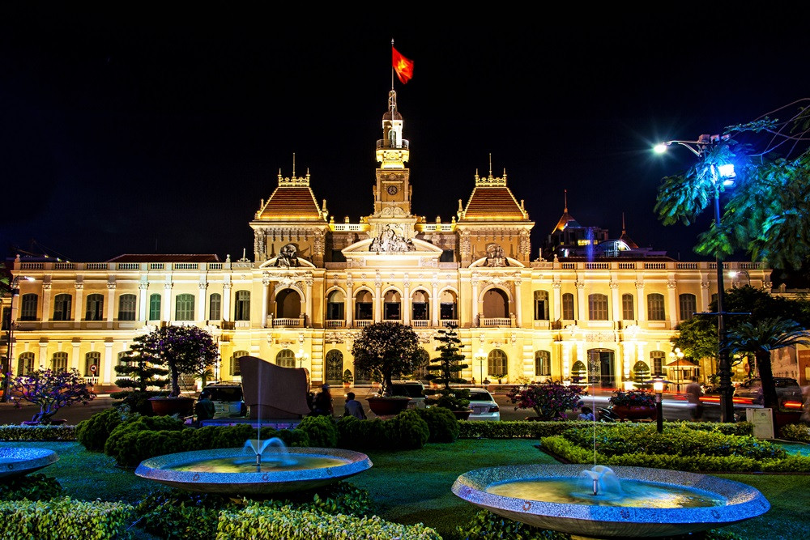
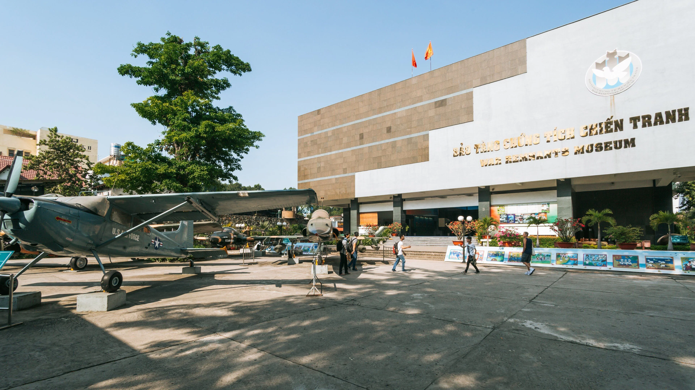
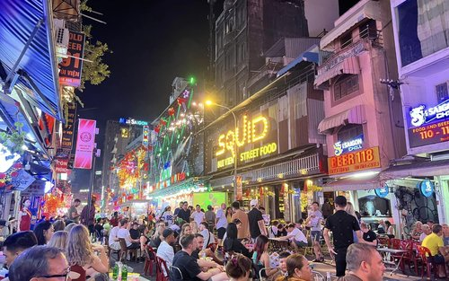
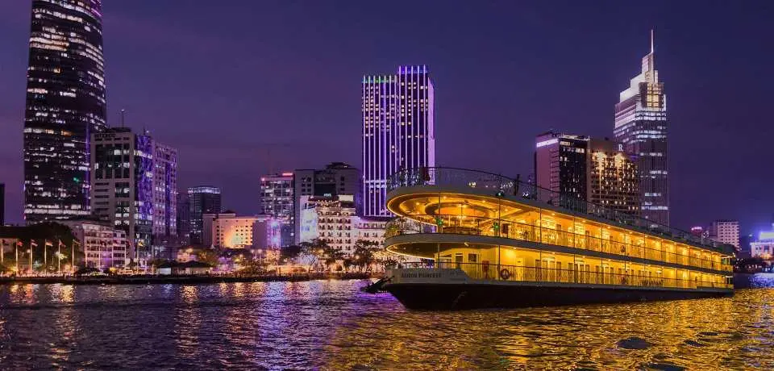
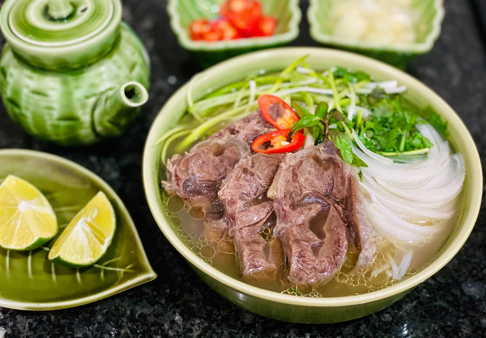
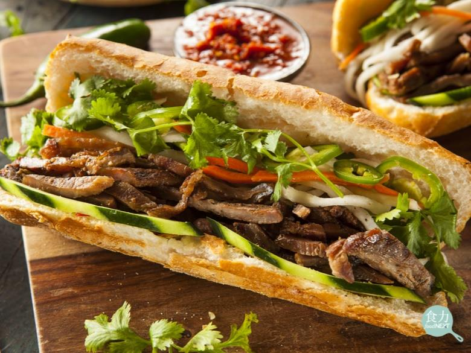
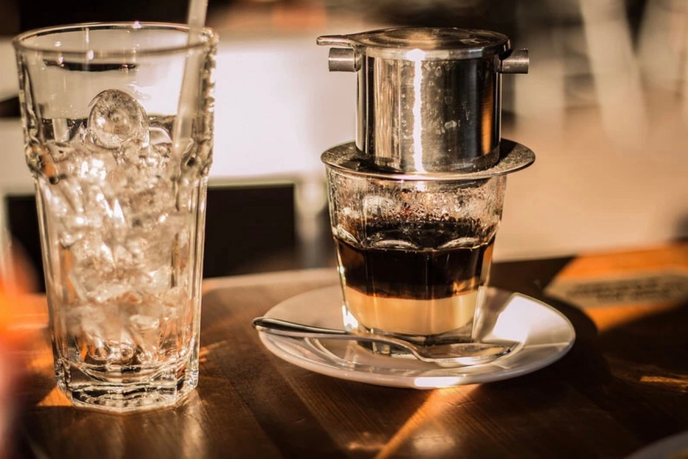
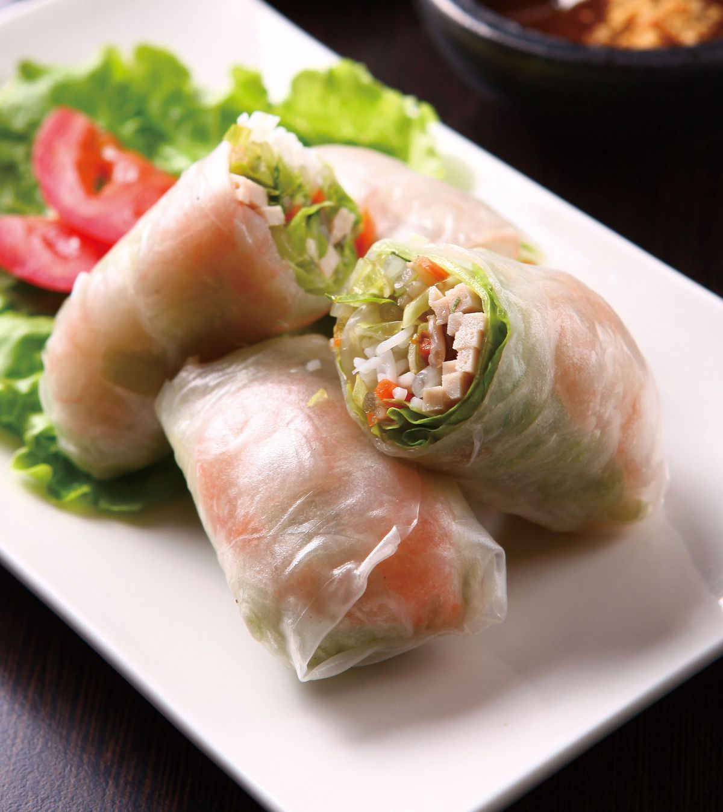
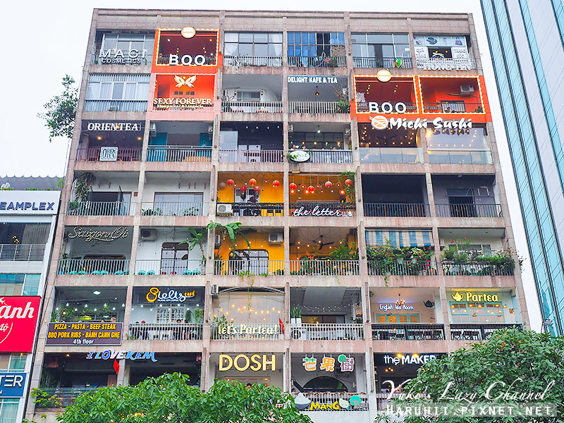

熱門景點
聖母大教堂

胡志明市聖母大教堂（Notre-Dame Cathedral Basilica of Saigon）是胡志明市最具代表性的地標之一，也是越南著名的天主教教堂。 教堂於19世紀法國殖民時期興建，建築融合新羅馬式與哥德式風格，外牆採用紅磚打造，展現濃厚的歐洲建築特色。 教堂前方矗立著聖母瑪利亞雕像，周圍綠意盎然，是許多遊客拍照留念的熱門景點。 高聳的雙鐘樓高約60公尺，不僅是胡志明市的重要宗教場所，更見證了城市百年來的歷史發展。
中央郵局

西貢中央郵局（Saigon Central Post Office）是胡志明市最具代表性的歷史建築之一，建於19世紀末法國殖民時期。 建築融合哥德式、文藝復興式與法式古典風格，外觀典雅壯觀，被譽為胡志明市最美的建築之一。 走進郵局內部，可看見高挑拱形天花板、復古鐵製結構以及充滿歷史感的木製櫃檯，展現濃厚的法國殖民時期特色。 中央郵局至今仍持續提供郵政服務，旅客也能在此寄送明信片、購買紀念品，留下獨特的旅行回憶。
濱城市場

濱城市場（Ben Thanh Market）是胡志明市歷史最悠久、最具代表性的傳統市場之一，也是遊客認識當地生活文化的重要景點。 市場自20世紀初營運至今，不僅是市民日常採買的場所，更成為體驗越南風情的熱門觀光景點。 每當夜幕降臨，市場周邊的夜市也開始熱鬧起來，琳瑯滿目的攤販、美食與熱鬧氛圍，展現出胡志明市充滿活力的城市魅力。 無論是購物、美食探索還是感受當地文化，濱城市場都是來到胡志明市不可錯過的經典景點。
必訪景點
統一宮

統一宮（Independence Palace），又稱獨立宮，是胡志明市最具歷史意義的地標之一，也是見證越南近代歷史的重要建築。 統一宮原為南越總統府，在越南戰爭期間扮演重要政治與軍事指揮中心的角色。 1975年4月30日，北越坦克駛入統一宮大門，象徵越南戰爭結束及南北越統一，因此統一宮也成為越南統一的重要歷史象徵。 如今，這裡被保存為歷史博物館，展示越南戰爭時期的重要文物與歷史資料。
戰爭遺跡博物館

戰爭遺跡博物館（War Remnants Museum）是胡志明市最具教育意義的博物館之一， 主要展示越南戰爭期間的歷史文物、照片與相關資料，讓遊客深入了解戰爭對越南人民及社會所帶來的影響。 館內收藏大量珍貴史料，包括戰爭照片、軍事裝備、飛機、坦克及戰爭時期的生活紀錄。 其中最受關注的展區展示了戰爭造成的人道影響，透過真實影像與故事，反映戰爭帶來的傷痛與和平的重要性。
阮惠步行街

阮惠步行街（Nguyen Hue Walking Street）是胡志明市最熱鬧、最具現代化氣息的城市廣場之一， 位於市中心第一郡，連接市政廳與西貢河畔，是當地居民與遊客休閒散步的重要場所。 步行街兩側林立著咖啡廳、餐廳、購物商場及特色建築，白天可感受繁華都市風貌，夜晚則在燈光點綴下展現迷人的城市夜景。 街道中央設有噴泉、水景及綠化空間，提供舒適的休憩環境。
西貢河夜遊

西貢河夜遊（Saigon River Cruise）是體驗胡志明市夜景最受歡迎的活動之一。 當夜幕降臨，遊船緩緩航行於西貢河上，讓旅客從不同角度欣賞城市璀璨的燈光與現代化天際線，感受西貢迷人的夜晚氛圍。 沿途可欣賞兩岸高樓大廈、特色橋樑及河濱景觀，在燈光映照下展現出與白天截然不同的城市風貌。 部分遊船還提供越南特色料理、自助晚餐及傳統音樂表演，讓旅客在享用美食的同時，沉浸於悠閒浪漫的河上時光。
特色美食
越南河粉 Pho

越南河粉（Phở）是越南最具代表性的傳統美食之一，也是許多旅客認識越南飲食文化的第一道料理。 河粉以熬煮多時的香濃高湯為基底，搭配滑順的米製河粉，再加入牛肉、雞肉或其他配料，風味鮮美且層次豐富。 享用時通常會搭配九層塔、豆芽菜、檸檬及辣椒等新鮮配料，讓湯頭更加清爽並增添香氣。 不同地區的河粉也各具特色，例如北越河粉口味較為清淡，而南越河粉則偏甜且配料豐富。
法國麵包 Bánh Mì

法國麵包（Bánh Mì）是越南最受歡迎的街頭美食之一，也是法國殖民文化與越南在地飲食結合的代表性料理。 外層酥脆、內部鬆軟的法國長棍麵包，夾入各式豐富配料，形成獨特且深受喜愛的風味。 常見內餡包括烤肉、火腿、肉鬆、雞肉或煎蛋，並搭配小黃瓜、香菜、醃漬紅白蘿蔔及特製醬料，口感層次豐富，兼具鹹香與清爽風味。 由於方便攜帶且價格實惠，法國麵包成為許多越南人早餐或日常點心的首選。
滴漏咖啡Cà phê phin

越南滴漏咖啡（Cà phê phin）是越南最具代表性的咖啡文化之一。 使用特製的金屬滴漏壺（Phin），將熱水緩慢滴入咖啡粉中萃取，沖泡過程雖然需要耐心等待，卻能展現濃郁醇厚的咖啡香氣。 越南咖啡多以羅布斯塔咖啡豆製成，口感濃烈且帶有獨特香氣。 最經典的喝法是在杯底加入煉乳，待咖啡滴漏完成後攪拌均勻，形成香濃順口的越南煉乳咖啡（Cà phê sữa đá）。 無論是熱飲或冰飲，都深受當地居民與遊客喜愛。
生春捲Gỏi cuốn

生春捲（Gỏi cuốn）是越南最具代表性的傳統美食之一，以新鮮米紙包裹蝦仁、豬肉、米粉、生菜及各種香草製成， 口感清爽且營養豐富，深受當地居民與遊客喜愛。 與油炸春捲不同，生春捲不經油炸，保留食材的原始風味與鮮甜口感，因此被視為健康且清爽的越南料理代表。 食用時通常搭配花生醬、海鮮醬或魚露醬，增添豐富層次與獨特風味。
景點照片
胡志明市咖啡公寓

胡志明市最具特色的文創地標之一，由老式公寓改建而成，聚集了眾多特色咖啡館、餐廳與文創商店。 繽紛的外觀與充滿個性的店家吸引許多遊客前來探索，也是體驗西貢咖啡文化與拍攝城市美景的熱門景點。
中央郵局建築
中央郵局建築融合了法國古典、哥德式與文藝復興風格，擁有高挑拱形天花板、復古鐵製結構及典雅的黃色外觀， 是胡志明市保存最完整的法式殖民時期建築之一。
粉紅教堂

是胡志明市最具代表性的地標之一，以夢幻的粉紅色外觀聞名。 教堂融合哥德式與羅馬式建築風格，擁有百年以上歷史，不僅是重要的宗教場所，也是遊客拍照打卡的熱門景點。
旅遊資訊
📍 城市：胡志明市（Ho Chi Minh City）
🌤 最佳旅遊時間：12月至4月
✈ 國際機場：新山一國際機場
💰 貨幣：越南盾（VND）